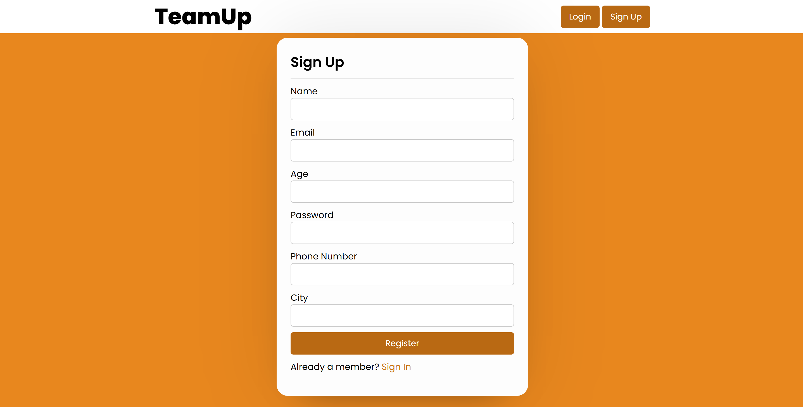
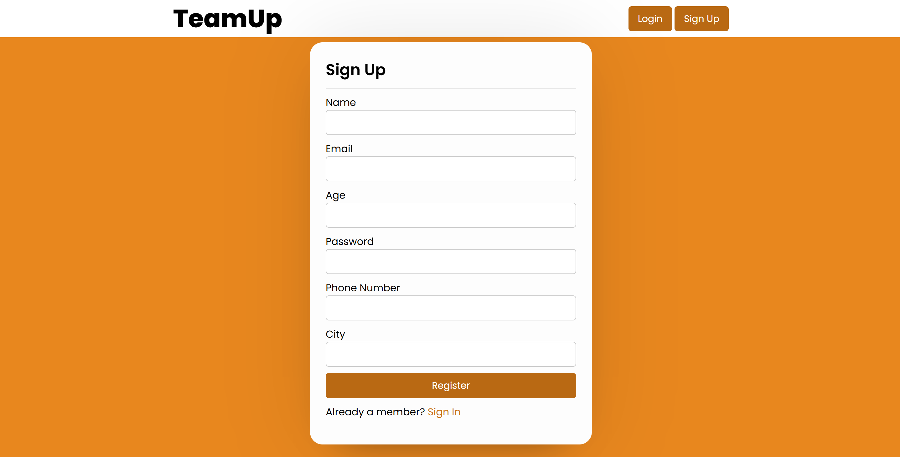

TeamUp 
PHP
MySQL
Google Places API
Everyone enjoys playing games, especially during the busy summer months. However, finding sports
partners shouldn't be more challenging than the game itself. TeamUp was created to help users find
one-time partners, whether they are new to town, their friends are busy, or they are simply looking
for a challenge. In an increasingly digital world, TeamUp makes sports accessible again by building
connections and encouraging users to stay active.
TeamUp enables users to find one-time sports partners based on skill level, age, and location. Users
can input or browse requests for specific sports during their free time to find teammates and
opponents, all without needing a full team's worth of people and equipment.
 
